主路线
从北村街过中央宽桥，接应山道伤者，再沿医舍前主路护送至南口。
保留已确认的M41雪峡样板，重构铁骑封锁营、北境日塔、王都门楼、沙城双井、盐原观测台、亡潮沼泽、沉没祭所、黑钟山村和孤岛诊所。街区、院落、道路和水域先形成真实关系，再安排部署与任务点；保留剧情、数值规则和现有动画。
前后地图均来自游戏原生渲染器；各图按任务重组空间，左右按各自完整边界展示，并非同像素比例的面积对比。点击原图可放大检查。
保留已确认样板：西北村街、东北至西南的融雪河、东岸医舍与南口山肩构成一条连续撤离谷地。
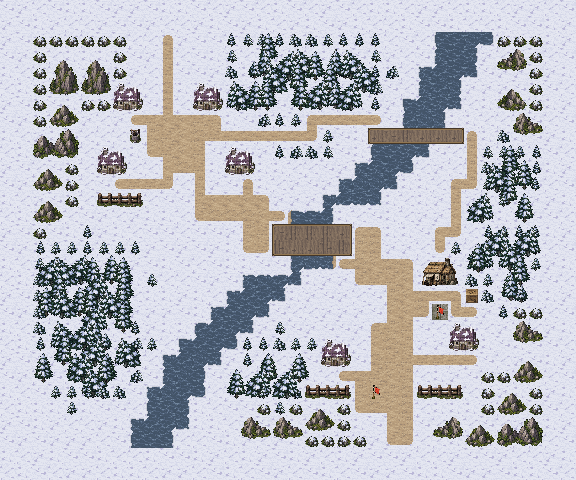

从北村街过中央宽桥，接应山道伤者，再沿医舍前主路护送至南口。
东北林缘一格小桥较长且窄，可绕到桥头守军侧后，最后与主线在医舍前汇合。
北口第4敌方回合有两名骑兵追来；前排开路与后排接应必须兼顾，南村居民也需保护。至少两组撤离、疏通南口、确认停靠点和击败指挥官缺一不可。
蓝：候选部署；红：守军；金：剧情友军；绿：交互；紫：出口。路线仅为本页解释，不加入实机画面。实际通行以游戏地形为准。
结算时正式队员 8/8 存活；无人濒死。
1,791次按键，含出入场与战后操作。原始记录
结算时正式队员 8/8 存活；无人濒死。
2,182次按键，含出入场与战后操作。原始记录
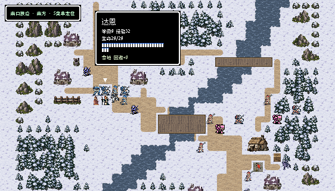
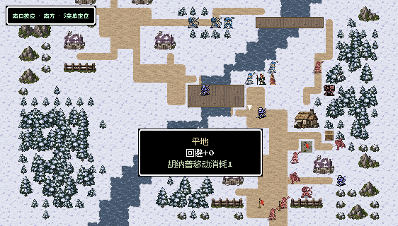
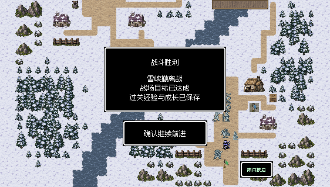
西北岩坡和中央林带分开军道与旧营，东侧木栅投送营有南北主门和西侧门，北关堡成为远端指挥点。
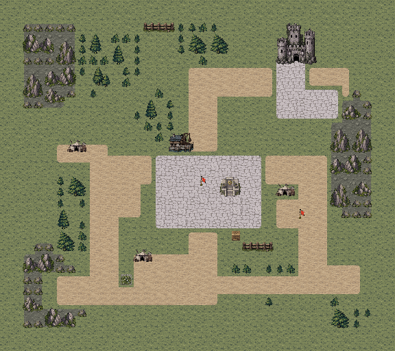

从西南集结区沿两格军道接近投送营南门，控制装置后继续北上击败统领。
西林旧营的一格路可先与旧同袍交涉，再接营侧门；东骑兵营支路连接东南援军入口。
兰斯可先邻接旧同袍使两名骑兵中立，缺席时按战斗路线推进。控制投送站立即切断后续投送；是否影响祭所援军由F44入场快照决定。
蓝：候选部署；红：守军；金：剧情友军；绿：交互；紫：出口。路线仅为本页解释，不加入实机画面。实际通行以游戏地形为准。
结算时正式队员 7/8 存活；濒死：芙拉。
988次按键，含出入场与战后操作。原始记录
结算时正式队员 6/8 存活；濒死：贝克、芙拉。
982次按键，含出入场与战后操作。原始记录
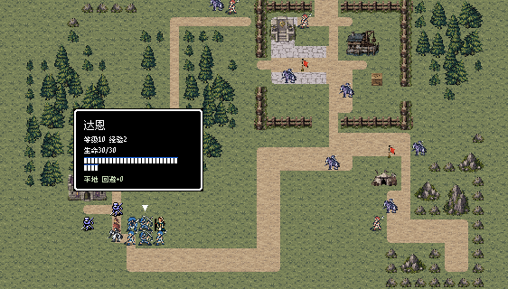
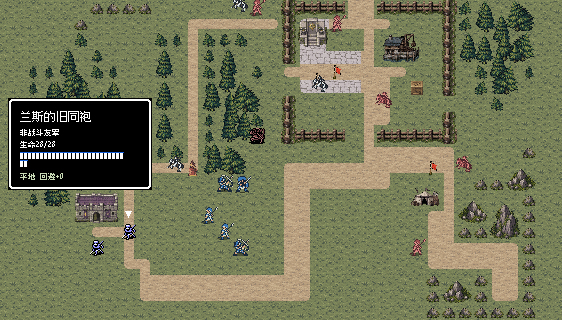
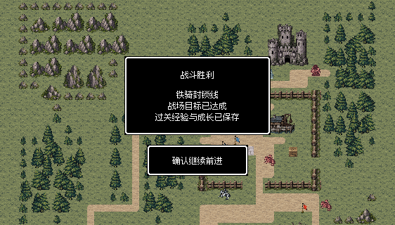
连续院墙与雪崖围住日塔庭院，北端主楼和塔身、东南控制室、西南医舍分区明确。

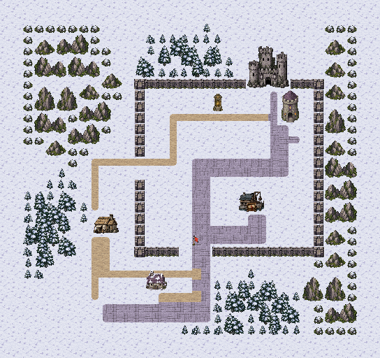
从西南集结处沿铺石主路穿三格南门，控制外院，再转入东南控制室南门。
西侧雪林窄路穿两格侧门，可避开正面门前重装，从院侧接近北塔。
正门接近快但正面压力较大，侧门路窄更长；病人与工匠留在医舍后方。夺塔可先完成，安全停塔必须战后收到F42步骤后另行确认。
蓝：候选部署；红：守军；金：剧情友军；绿：交互；紫：出口。路线仅为本页解释，不加入实机画面。实际通行以游戏地形为准。
结算时正式队员 6/6 存活；无人濒死。
749次按键，含出入场与战后操作。原始记录
结算时正式队员 6/6 存活；无人濒死。
783次按键，含出入场与战后操作。原始记录
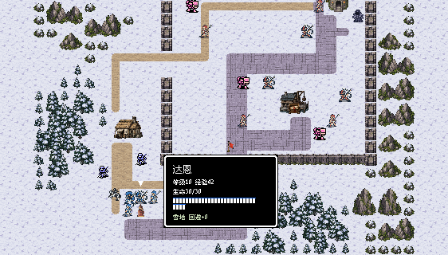
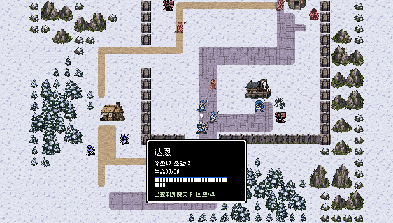
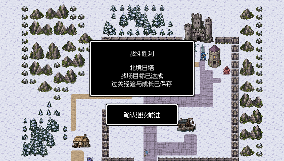
双塔夹出四格正门，连续城墙分开城外住区与城内指挥堡；西医舍设完整护院，南军需街承担另一侧集结与增援。


从靠近西后撤门的部署区先接住医舍防线，再沿城外主街或墙内街接近双塔门楼。
西侧一格巷经过城墙后撤门和医舍护院唯一南口，可绕开正门重装；东南支街是第4回合援军来路。
队伍需要在推进门楼时兼顾伤兵通道。赫兰败北会解除武装、余兵中立并取消后续援军，取得门楼即可结算，不要求消灭投降者。
蓝：候选部署；红：守军；金：剧情友军；绿：交互；紫：出口。路线仅为本页解释，不加入实机画面。实际通行以游戏地形为准。
结算时正式队员 6/6 存活；无人濒死。
1,382次按键，含出入场与战后操作。原始记录
结算时正式队员 5/6 存活；濒死：赫维。
1,409次按键，含出入场与战后操作。原始记录
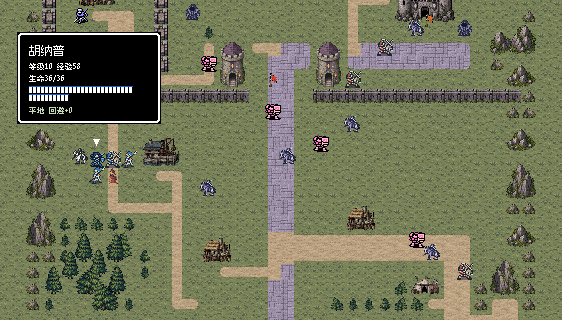
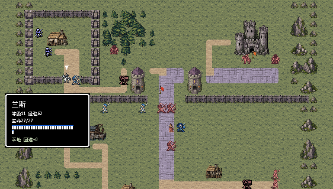
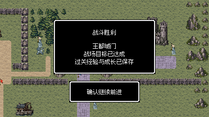
北住区和南取水院围绕两口实体井展开，民居、小仓院与取水巷形成紧凑沙城，沙地延续到地图外缘。

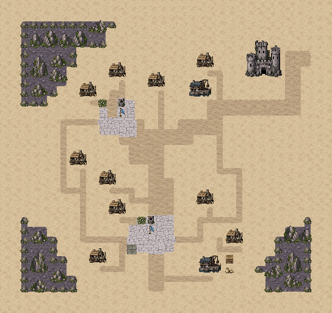
从南井接应区沿生活街推进北井，北井主街继续通向东北城关。
西住户窄巷能侧接北井，东后巷可绕守军街换线，但两者都比中央主巷更窄。
可稳守南井后夺回北井，也可分兵争取两井；不能让两井同时失守。敌人持续追井、连续占井一轮才失守与第6回合门槛全部保留。
蓝：候选部署；红：守军；金：剧情友军；绿：交互；紫：出口。路线仅为本页解释，不加入实机画面。实际通行以游戏地形为准。
结算时正式队员 7/8 存活；濒死：罗恩。
1,847次按键，含出入场与战后操作。原始记录
结算时正式队员 8/8 存活；无人濒死。
2,329次按键，含出入场与战后操作。原始记录
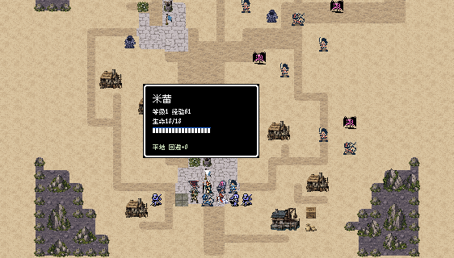
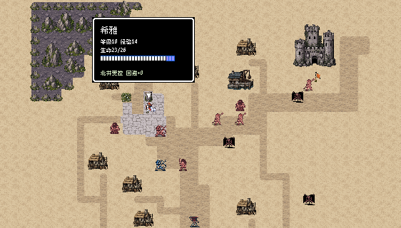
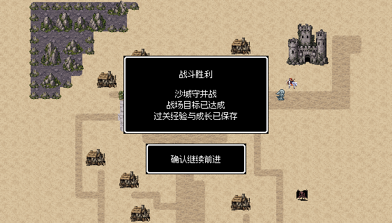
南抄录住区、中央设备台、东楼记录室和北值守楼沿盐原旧路分布，裸盐地与小块石台区分生活和设备用途。
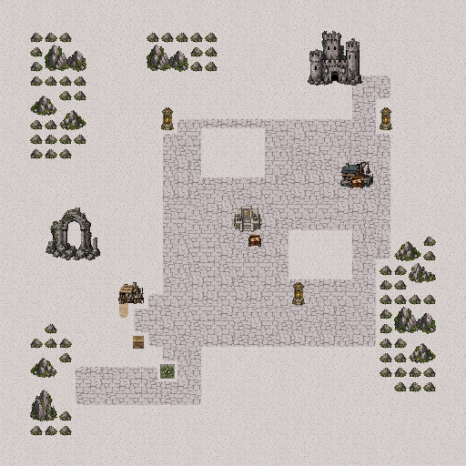

从南住区沿东侧抢救线抵达记录楼南门，保护记录后返回中央设备南面复制参数。
西岩脊旧维护路更长、更窄，可绕到北庭；东楼外侧防火巡查路连接焚毁兵方向。
需要按保护记录、复制设备的顺序行动；第5回合预告，第6回合焚毁兵出发，连续两次到门前点火才毁记录。清守军与抢救资料须分配优先级。
蓝：候选部署；红：守军；金：剧情友军；绿：交互；紫：出口。路线仅为本页解释，不加入实机画面。实际通行以游戏地形为准。
结算时正式队员 7/7 存活；无人濒死。
725次按键，含出入场与战后操作。原始记录
结算时正式队员 6/7 存活；濒死：米蕾。
808次按键，含出入场与战后操作。原始记录
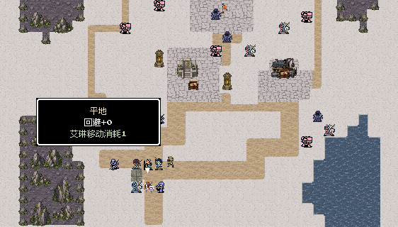
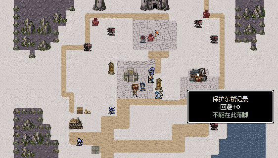
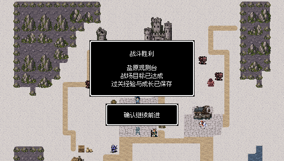
南船口、中央转运岛和东北古道高地由真正水沟分开，两段木栈接起干岸，毒沼集中在护送线外侧。


居民从护卫后方出发，沿南岸便桥、中央岛和东北高木栈前进，按顺序确认三处干地并撤到古道口。
西湿地窄桥可供小队压制术士并接近北祭台，离开干线会承担毒沼和孤军风险。
护卫应保留后卫照顾慢行居民，不能全队只追神官。第3回合最多三个指定召唤物保留；神官败北只移除指定召唤物，天然敌人仍需处理。
蓝：候选部署；红：守军；金：剧情友军；绿：交互；紫：出口。路线仅为本页解释，不加入实机画面。实际通行以游戏地形为准。
结算时正式队员 6/6 存活；无人濒死。
1,494次按键，含出入场与战后操作。原始记录
结算时正式队员 6/6 存活；无人濒死。
1,485次按键，含出入场与战后操作。原始记录
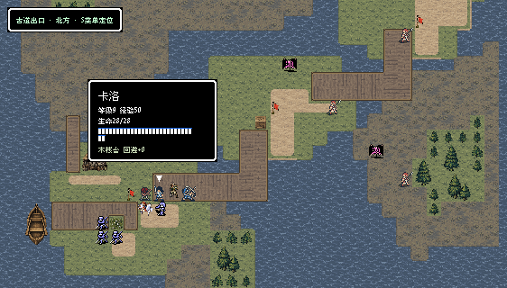
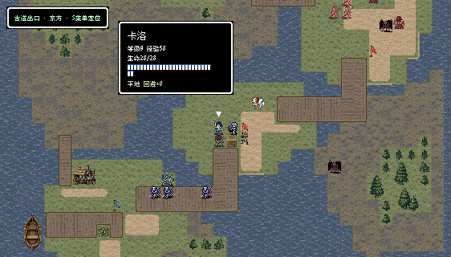
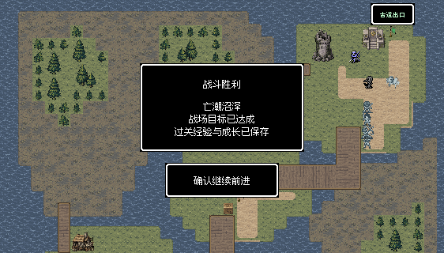
西、中央、东调节台和北神门以残存风化石台立在水中，南接应台容纳工匠棚与泊船，木桥只跨实际水隙。

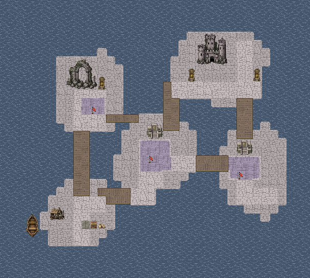
从南接应台经双格便桥进入中央作业台，再接东调节平台与北神门。
西侧长桥通旧石拱，单格短桥侧接中央；东北维护桥提供另一条接近北神门的路线。
三点可自行安排交接顺序，但全部完成后仍须保护至少一名工匠到下一己方回合。东平台是否在第5回合收到援军取决于入场时投送站状态。
蓝：候选部署；红：守军；金：剧情友军；绿：交互；紫：出口。路线仅为本页解释，不加入实机画面。实际通行以游戏地形为准。
结算时正式队员 7/7 存活；无人濒死。
1,707次按键，含出入场与战后操作。原始记录
结算时正式队员 7/7 存活；无人濒死。
1,621次按键，含出入场与战后操作。原始记录
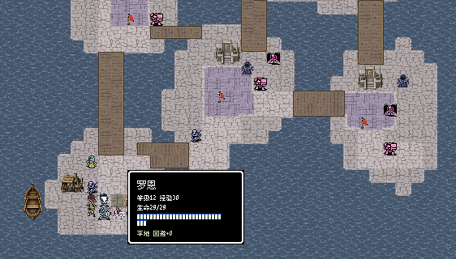
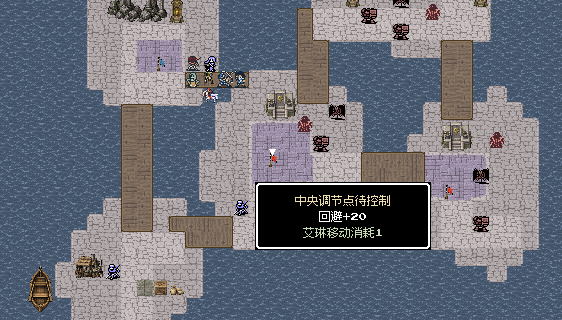
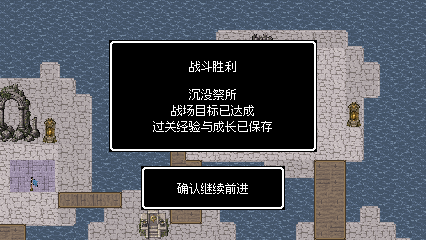
钟楼主街串起雪山住屋，东侧名册屋朝南，西南医舍与避难院在队伍后方；林带和岩坡围住村缘。
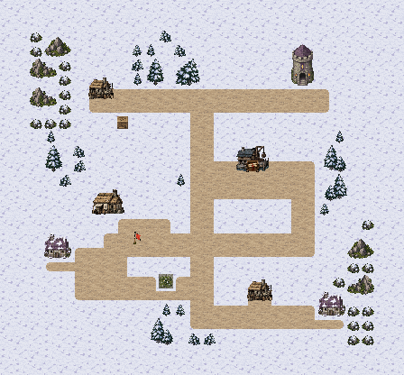

从南村口沿主街到名册屋支路，在南门前保护名册，再向钟楼守军推进。
东坡进村路与名册南门相接，是焚毁兵真实来路；西医舍与南住屋支线提供后方回撤空间。
第4回合预告、第5回合焚毁兵出发，连续两次点火才毁册。名册已毁仍能击败队长结束支线，但不会恢复烧毁资料或发完整名册奖励。
蓝：候选部署；红：守军；金：剧情友军；绿：交互；紫：出口。路线仅为本页解释，不加入实机画面。实际通行以游戏地形为准。
结算时正式队员 8/8 存活；无人濒死。
1,216次按键，含出入场与战后操作。原始记录
结算时正式队员 8/8 存活；无人濒死。
1,131次按键，含出入场与战后操作。原始记录
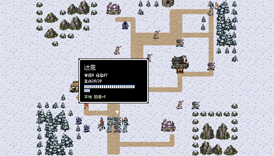
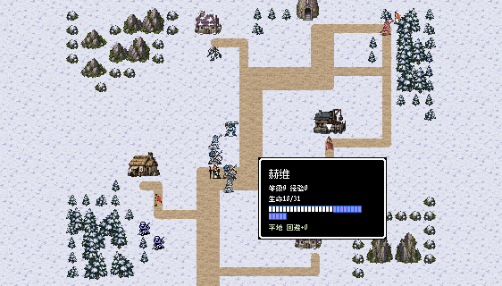
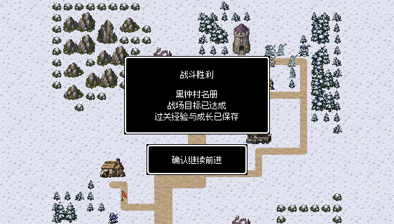
南岸诊疗屋、井台、药车和照护住屋组成医疗院，北驻军岛与诊疗院之间有真实水沟，西南船口接连续转运路。
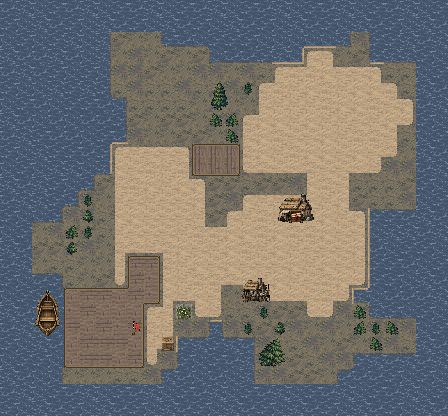
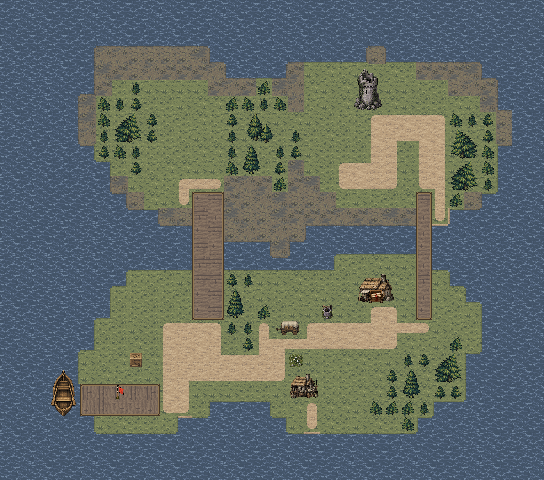
先守诊疗院与主桥南端，让两组病人沿院南干路撤到西南船口，再推进北岛守军。
东侧一格窄栈可绕到北端守军侧面，主木桥则便于集中兵力保护医疗院。
北端飞行敌第3回合压近，应先保护病人再分兵追敌。两组病人都须撤离，赛琳生死独立记录；招募仍要战后明确邀请。
蓝：候选部署；红：守军；金：剧情友军；绿：交互；紫：出口。路线仅为本页解释，不加入实机画面。实际通行以游戏地形为准。
结算时正式队员 6/6 存活；无人濒死。
727次按键，含出入场与战后操作。原始记录
结算时正式队员 6/6 存活；无人濒死。
745次按键，含出入场与战后操作。原始记录
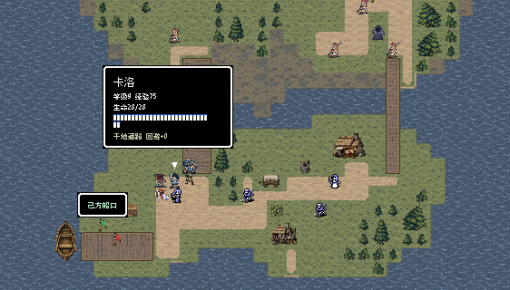
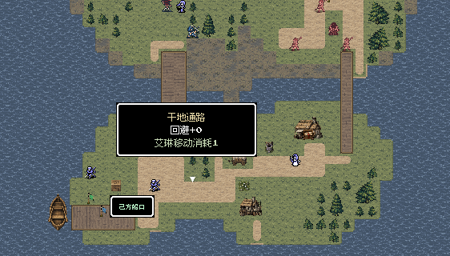
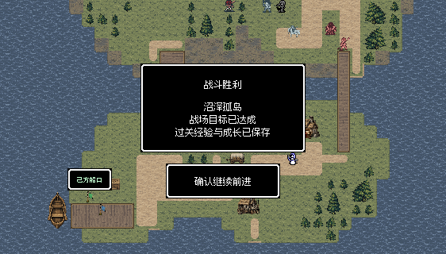
十图完成两轮逐关实际输入复测，检查战后据点、救援、招募和主线接续。另从第三章真实完成记录接续，先在营站通过正常菜单使用既有三份救治资源，再连续推进本章十图、完成两岸确认与D42，并进入第五章。王都曾因自动试玩仍固守医舍而停滞；从同一第91回合状态调整进攻分工，第93回合获胜，随后完成祭所。全程没有重试、重开战场、修改属性或强制胜利。
铁骑营把旧同袍放在兰斯当轮能交涉的西营后方；王都伤兵退入只有两格南入口的完整护院，护院与正门可分工。修复石路与土路交界的草缝，移开挡日塔侧路的灯柱，删除误导的名册装饰箱。沼泽补水沟约束撤离线，实际自动寻路不再抄入毒沼；沙城外缘和岩坡、祭所石台的材质也已统一。
3081项独立规则、连通与保存检查通过；30张实机视口文字安全区检查无错误。M41保留已确认样板，其他三章30图保持原样，程序与人物动画代码沿用。
两轮逐关检查使用真实开发记录的隔离副本；测试程序通过普通按键驱动实际游戏，完成移动、战斗、交互和结算，没有修改属性、随机结果或强制胜利。表内回合数受路线、命中和伤情影响，不代表固定难度。
保留了初版NPC受袭、沼泽追击神官忽略西路护尾，以及王都驾驶器守门过久的真实记录。最后采用兰斯交涉、两人护院后合流、飞兵与弓手护尾等正常输入策略；未改变单位属性、随机结果或胜利条件。最终逐关两轮按各关提取成功记录：同一批原始报告可能包含其他关的早期失败，未选作该关成功证据。整章在同一T91状态续行，不重试、不重置伤情。
未重新安装手机包；HTML资源与脚本检查不等同浏览器布局验收。